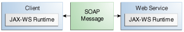

Esta sección muestra cómo crear e implementar un servicio web simple y dos clientes: un cliente de
aplicación y un cliente web. El código fuente del servicio está en el directorio
tut-install/examples/jaxws/helloservice-war/, y los clientes están en los
directorios tut-install/examples/jaxws/hello-appclient/ y
tut-install/examples/jaxws/hello-webclient/.
Figura 31-1 ilustra cómo la tecnología JAX-WS administra la comunicación
entre un servicio web y un cliente.
Figura 31-1 Comunicación entre un servicio web JAX-WS y un cliente

El punto de partida para desarrollar un servicio web JAX-WS es una clase Java anotada con la
anotación javax.jws.WebService. La anotación @WebService define la clase
como un punto final de servicio web.
Una interfaz de punto final de servicio o una implementación de punto final de servicio (SEI, en
inglés) es una interfaz o clase Java, respectivamente, que declara los métodos que un cliente
puede invocar en el servicio. No se requiere una interfaz al construir un punto final JAX-WS. La
clase de implementación del servicio web define implícitamente un SEI.
Puede especificar una interfaz explícita agregando el elemento endpointInterface a la
anotación @WebService en la clase de implementación. A continuación, debe
proporcionar una interfaz que defina los métodos públicos disponibles en la clase de
implementación del punto final.
Pasos Básicos para Crear un Servicio Web y Cliente
Los pasos básicos para crear un servicio web y un cliente son los siguientes.
-
Codifique la clase de implementación.
-
Compile la clase de implementación.
-
Empaquete los archivos en un archivo WAR.
-
Implemente el archivo WAR. El Servidor GlassFish genera los artefactos del servicio web, que
se utilizan para comunicarse con los clientes, durante la implementación.
-
Codifique la clase de cliente.
-
Utilice el objetivo de Maven wsimport para generar y compilar los artefactos
del servicio web necesarios para conectarse al servicio.
-
Compile la clase de cliente.
-
Ejecutar el cliente.
Si usa el EID NetBeans para crear un servicio y un cliente, el IDE realiza la tarea
wsimport por usted.
Las secciones que siguen cubren estos pasos en mayor detalle.
Requisitos de un Endpoint JAX-WS
Los puntos finales JAX-WS deben cumplir estos requisitos.
-
La clase de implementación debe anotarse con la anotación javax.jws.WebService
o javax.jws.WebServiceProvider.
-
La clase de implementación puede hacer referencia explícita a una SEI a través del elemento
endpointInterface de la anotación @WebService, pero no está
obligada a hacerlo. Si no se especifica endpointInterface en
@WebService, se define implícitamente un SEI para la clase de implementación.
-
Los métodos comerciales de la clase de implementación deben ser públicos y no deben
declararse static o final.
-
Los métodos comerciales que se exponen a los clientes de servicios web se deben anotar con
javax.jws.WebMethod.
-
Los métodos comerciales que se exponen a los clientes de servicios web deben tener
parámetros y tipos de retorno compatibles con JAXB. Consulte la lista de enlaces de tipos de
datos predeterminados de JAXB en Tipos Admitidos por
JAX-WS.
-
La clase de implementación no debe declararse final y no debe ser
abstract.
-
La clase de implementación debe tener un constructor público predeterminado.
-
La clase de implementación no debe definir el método finalize.
-
La clase de implementación puede usar las anotaciones
javax.annotation.PostConstruct o javax.annotation.PreDestroy en
sus métodos para las devoluciones de llamadas de eventos del ciclo de vida.
El contenedor llama al método @PostConstruct antes de que la clase de
implementación comience a responder a los clientes del servicio web.
El contenedor llama al método @PreDestroy antes de que el punto final se
elimine de la operación.
Codificar la Clase de Implementación del Servicio del Endpoint
En este ejemplo, la clase de implementación, Hello, se anota como un punto final de
servicio web mediante la anotación @WebService. Hello declara un único
método llamado sayHello, anotado con la anotación @WebMethod, que
expone el método anotado a los clientes del servicio web. El método sayHello
devuelve un saludo al cliente, utilizando el nombre que se le pasó para redactar el saludo. La
clase de implementación también debe definir un constructor predeterminado, público y sin
argumentos.
package javaeetutorial.helloservice;
import javax.jws.WebService;
import javax.jws.WebMethod;
@WebService
public class Hello {
private final String message = "Hola, ";
public Hello() {
}
@WebMethod
public String sayHello(String name) {
return message + name + ".";
}
}
Construyendo, Empaquetando, y Desplegando el Servicio
Puede usar el EID NetBeans o Maven para compilar, empaquetar e implementar la aplicación
helloservice-war.
Aquí se tratan los siguientes temas:
Para Construir, Empaquetar, y Desplegar el Servicio Usando el EID NetBeans
-
Asegúrese de que el Servidor GlassFish se haya iniciado (consulte
Arrancando y Parando el Servidor GlassFish).
-
En el menú Archivo, elija Abrir proyecto.
-
En el cuadro de diálogo Abrir proyecto, vaya a:
tut-install/examples/jaxws
-
Seleccione la carpeta helloservice-war.
-
Haga clic en Abrir proyecto.
-
En la pestaña Proyectos, haga clic con el botón derecho en el proyecto
helloservice-war y seleccione Ejecutar.
Este comando construye y empaqueta la aplicación en un archivo WAR,
helloservice-war.war, ubicado en
tut-install/examples/jaxws/helloservice-war/target, e implementa
este archivo WAR en su instancia de el Servidor GlassFish. También abre la interfaz de prueba
del servicio web en la URL que se muestra en
Para Probar el Servicio sin un Cliente.
Para Construir, Empaquetar, y Desplegar el Servicio Usando Maven
-
Asegúrese de que se haya iniciado el Servidor GlassFish
(consulte
Arrancando y Parando el Servidor GlassFish).
-
En una ventana de terminal, vaya a:
tut-install/examples/jaxws/helloservice-war/
-
Introduzca el siguiente comando:
Este comando construye y empaqueta la aplicación en un archivo WAR,
helloservice-war.war, ubicado en el directorio target, y luego
implementa el WAR en el Servidor GlassFish.
Probando los Métodos de un Endpoint de Servicio Web
El Servidor GlassFish le permite probar los métodos de un punto final de servicio web.
Aquí se tratan los siguientes temas:
Para Probar el Servicio sin un Cliente
Para probar el método sayHello de HelloService, sigue estos pasos.
-
Abra la interfaz de prueba del servicio web ingresando la siguiente URL en un navegador
web:
http://localhost:8080/helloservice-war/HelloService?Tester
-
En Métodos, ingrese un nombre como parámetro para el método sayHello.
-
Haz clic en saludar.
Esto lo lleva a la página de invocación del método sayHello.
En Método devuelto, verá la respuesta del extremo.
Una Aplicación Cliente JAX-WS Simple
La clase HelloAppClient es un cliente de aplicación independiente que accede al
método sayHello de HelloService. Esta llamada se realiza a través de
un puerto, un objeto local que actúa como proxy del servicio remoto. El puerto se crea en el
momento del desarrollo mediante el objetivo de Maven wsimport, que genera
artefactos portátiles JAX-WS basados en un archivo WSDL.
Aquí se tratan los siguientes temas:
Codificando la Aplicación Cliente
Al invocar los métodos remotos en el puerto, el cliente realiza estos pasos.
-
Utiliza la clase helloservice.endpoint.HelloService generada, que representa
el servicio en el URI del archivo WSDL del servicio implementado:
import javaeetutorial.helloservice.endpoint.HelloService;
import javax.xml.ws.WebServiceRef;
public class HelloAppClient {
@WebServiceRef(wsdlLocation =
"http://localhost:8080/helloservice-war/HelloService?WSDL")
private static HelloService service;
-
Recupera un proxy para el servicio, también conocido como puerto, invocando
getHelloPort en el servicio:
javaeetutorial.helloservice.endpoint.Hello port = service.getHelloPort();
El puerto implementa el SEI definido por el servicio.
-
Invoca el método sayHello del puerto, pasando una cadena al servicio:
return port.sayHello(arg0);
Aquí está la fuente completa de HelloAppClient.java, que se encuentra en el
directorio
tut-install/examples/jaxws/hello-appclient/src/main/java/javaeetutorial/
hello/appclient/
:
package javaeetutorial.hello.appclient;
import javaeetutorial.helloservice.endpoint.HelloService;
import javax.xml.ws.WebServiceRef;
public class HelloAppClient {
@WebServiceRef(wsdlLocation =
"http://localhost:8080/helloservice-war/HelloService?WSDL")
private static HelloService service;
/**
* @param args los argumentos de la línea de comando
*/
public static void main(String[] args) {
System.out.println(sayHello("mundo"));
}
private static String sayHello(java.lang.String arg0) {
javaeetutorial.helloservice.endpoint.Hello port =
service.getHelloPort();
return port.sayHello(arg0);
}
}
Ejecutando la Aplicación Cliente
Puede usar el EID NetBeans o Maven para compilar, empaquetar, implementar y ejecutar la
aplicación hello-appclient. Para compilar el cliente, primero debe haber
implementado helloservice-war, como se describe en
Construyendo, Empaquetando y Desplegando el Servicio.
Aquí se tratan los siguientes temas:
Para ejecutar el cliente de la aplicación usando el EID NetBeans
-
En el menú Archivo, elija Abrir proyecto.
-
En el cuadro de diálogo Abrir proyecto, vaya a:
tut-install/examples/jaxws
-
Seleccione la carpeta hello-appclient.
-
Haga clic en Abrir proyecto.
-
En la pestaña Proyectos, haga clic con el botón derecho en el proyecto
hello-appclient y seleccione Generar.
Este comando ejecuta el objetivo wsimport, luego compila, empaqueta y
ejecuta el cliente. Verá la salida del cliente de la aplicación en la pestaña de
salida hello-appclient:
--- exec-maven-plugin:1.2.1:exec (run-appclient) @ hello-appclient ---
Hola, mundo.
Para ejecutar el cliente de la aplicación usando Maven
-
En una ventana de terminal, vaya a:
tut-install/examples/jaxws/hello-appclient/
-
Introduzca el siguiente comando:
Este comando ejecuta el objetivo wsimport, luego compila, empaqueta y
ejecuta el cliente. La salida del cliente de la aplicación se ve así:
--- exec-maven-plugin:1.2.1:exec (run-appclient) @ hello-appclient ---
Hola, mundo.
Un cliente web JAX-WS Simple
HelloServlet es un servlet que, como el cliente Java, llama al método
sayHello del servicio web. Al igual que el cliente de la aplicación, realiza esta
llamada a través de un puerto.
Aquí se tratan los siguientes temas:
Codificando el Servlet
Para invocar el método en el puerto, el cliente realiza estos pasos.
-
Importa el punto final HelloService y la anotación
WebServiceRef:
import javaeetutorial.helloservice.endpoint.HelloService;
...
import javax.xml.ws.WebServiceRef;
-
It defines a reference to the web service by specifying the WSDL location:
@WebServiceRef(wsdlLocation =
"http://localhost:8080/helloservice-war/HelloService?WSDL")
-
Declara el servicio web, luego define un método privado que llama al método
sayHello en el puerto:
private HelloService service;
...
private String sayHello(java.lang.String arg0) {
javaeetutorial.helloservice.endpoint.Hello port =
service.getHelloPort();
return port.sayHello(arg0);
}
-
En el servlet, llama a este método privado:
out.println("<p>" + sayHello("mundo") + "</p>");
Las partes significativas del código HelloServlet siguen. El código se encuentra
en el directorio tut-install/examples/jaxws/hello-webclient/src/java/
javaeetutorial/hello/webclient/.
package javaeetutorial.hello.webclient;
import javaeetutorial.helloservice.endpoint.HelloService;
import java.io.IOException;
import java.io.PrintWriter;
import javax.servlet.ServletException;
import javax.servlet.annotation.WebServlet;
import javax.servlet.http.HttpServlet;
import javax.servlet.http.HttpServletRequest;
import javax.servlet.http.HttpServletResponse;
import javax.xml.ws.WebServiceRef;
@WebServlet(name="HelloServlet", urlPatterns={"/HelloServlet"})
public class HelloServlet extends HttpServlet {
@WebServiceRef(wsdlLocation =
"http://localhost:8080/helloservice-war/HelloService?WSDL")
private HelloService service;
/**
* Procesa solicitudes tanto para los metodos HTTP <code>GET</code>
* <code>POST</code>.
* @param request solicitud de servlet
* @param response respuesta de servlet
* @throws ServletException si se produce un error específico del servlet
* @throws IOException si se produce un error de E/S
*/
protected void processRequest(HttpServletRequest request,
HttpServletResponse response)
throws ServletException, IOException {
response.setContentType("text/html;charset=UTF-8");
try (PrintWriter out = response.getWriter()) {
out.println("<html lang=\"en\">");
out.println("<head>");
out.println("<title>Servlet HelloServlet</title>");
out.println("</head>");
out.println("<body>");
out.println("<h1>Servlet HelloServlet en " +
request.getContextPath () + "</h1>");
out.println("<p>" + sayHello("mundo") + "</p>");
out.println("</body>");
out.println("</html>");
}
}
// métodos doGet y doPost, que llaman a processRequest, y
// método getServletInfo
private String sayHello(java.lang.String arg0) {
javaeetutorial.helloservice.endpoint.Hello port =
service.getHelloPort();
return port.sayHello(arg0);
}
}
Ejecutando el Cliente Web
Puede usar el EID NetBeans o Maven para compilar, empaquetar, implementar y ejecutar la
aplicación hello-webclient. Para compilar el cliente, primero debe haber
implementado helloservice-war, como se describe en
Construyendo, Empaquetando y Desplegando el Servicio.
Aquí se tratan los siguientes temas:
Para ejecutar el cliente web usando el EID NetBeans
-
En el menú Archivo, elija Abrir proyecto.
-
En el cuadro de diálogo Abrir proyecto, vaya a:
tut-install/examples/jaxws
-
Seleccione la carpeta hello-webclient.
-
Haga clic en Abrir proyecto.
-
En la pestaña Proyectos, haga clic con el botón derecho en el proyecto
hello-webclient y seleccione Generar.
Esta tarea ejecuta el objetivo wsimport, crea y empaqueta la aplicación
en un archivo WAR, hello-webclient.war, ubicado en el directorio
target, y lo implementa en el Servidor GlassFish.
-
En un navegador web, ingrese la siguiente URL:
http://localhost:8080/hello-webclient/HelloServlet
La salida del método sayHello aparece en la ventana.
Para ejecutar el cliente web usando Maven
-
En una ventana de terminal, vaya a:
tut-install/examples/jaxws/hello-webclient/
-
Introduzca el siguiente comando:
Este comando ejecuta el objetivo wsimport, luego crea y empaqueta la
aplicación en un archivo WAR, hello-webclient.war, ubicado en el
directorio target . Luego, el archivo WAR se implementa en el Servidor
GlassFish.
-
En un navegador web, ingrese la siguiente URL:
http://localhost:8080/hello-webclient/HelloServlet
La salida del método sayHello aparece en la ventana.